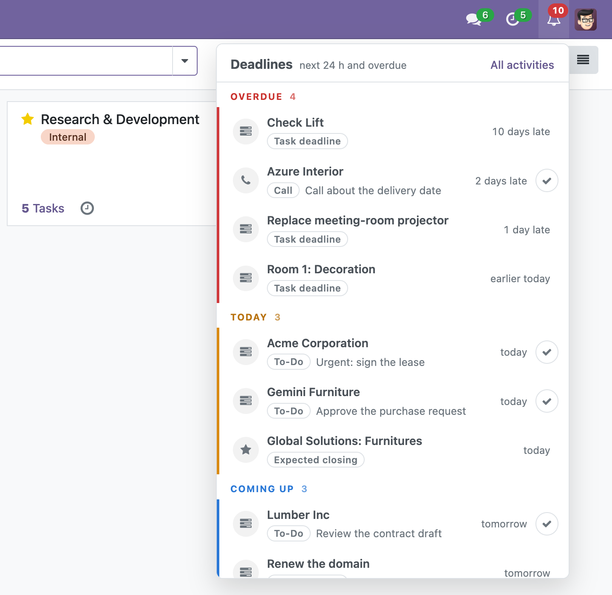
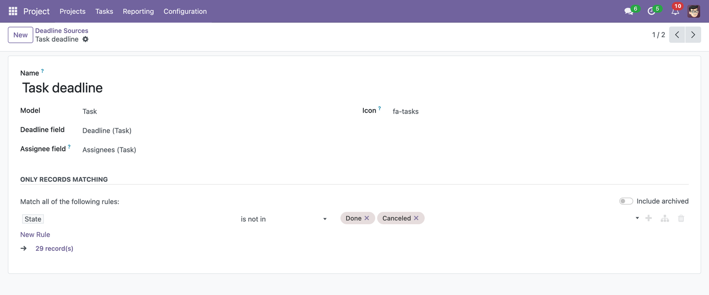
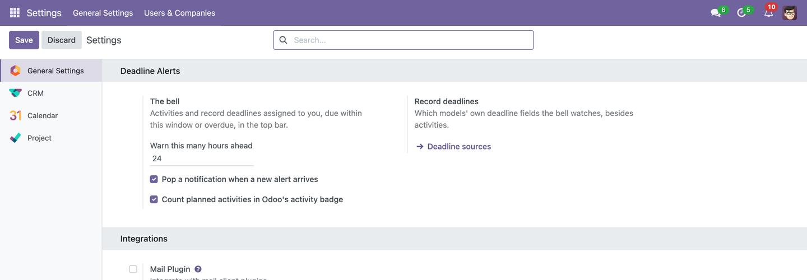

Overdue, today, tomorrow — every deadline assigned to you, in one bell
A bell in the top bar. It counts everything of yours that is overdue or due within the next 24 hours and lists it in three groups — overdue, today, coming up — the most late first. Click a line and the record opens; tick an activity and it is done. When an activity of yours is created, moved, done or deleted, the bell learns about it at once, not on the next reload.

Red when something is overdue. A rail per group, a pill for the kind, and a plain "2 days late", "today", "tomorrow" on the right. Record deadlines have no tick: a task is done in the task.
ActivitiesEvery activity assigned to you — the scheduled call, the review, the approval — with the record it belongs to, its type and its summary. Tick it from the bell; the activity is marked done and the badge drops. |
Record deadlinesA task's deadline, a quotation's expiry, an invoice's due date, a lead's expected closing. Sources for Project, CRM, Sales, Purchase and Invoicing are added on install when those apps are there — or later, when they arrive. |
Any model, in a minuteA source is a model, its date field, the field that says whose record it is (a user, or several), an icon, and a filter for which records still count — a done task has no deadline. Added in Settings, no code. |

Live, through the busAn activity created for you, reassigned, rescheduled, done or deleted reaches your bell through Odoo's own bus — the same channel as chat. Reassigning tells both the old and the new assignee. Record deadlines are re-read every few minutes and whenever the bell is opened. |
A notification, only when it grew"2 overdue, 3 due within 24 hours" pops when the number of alerts has gone up — never on login, never when one was just ticked off. It can be turned off; the badge stays. |
Only what is yoursThe bell reads as the user: their activities, records assigned to them that they may see. No new security group, no elevated rights. Ticking an activity that is not yours is refused. |

Settings: how far ahead to warn, whether new alerts pop a notification, and whether Odoo's own activity badge should count planned activities too, not only today's and overdue ones.
Depends on nothing but Discuss (mail, bus), so it runs on both
editions. Available for Odoo 17.0, 18.0 and 19.0. One small table for the sources;
nothing is fetched from the internet.